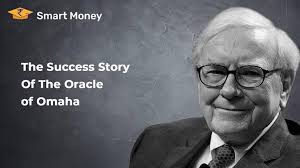
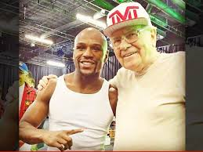
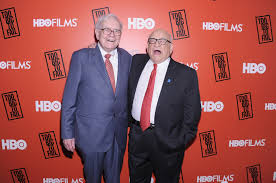
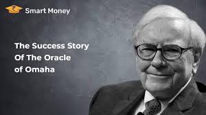
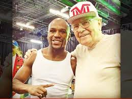
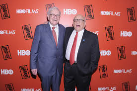

About Me
Warren Buffett is an American business magnate, investor, and philanthropist. He was born in 1930 in Omaha, Nebraska, and showed an early interest in business and investing. At the age of 11, he made his first investment in the stock market and by the time he was a teenager, he was already making thousands of dollars from his investments. After completing his education at the University of Nebraska and the University of Pennsylvania, Buffett worked for a few years as an investment salesman and analyst. In 1956, he started his own investment partnership and eventually became the chairman and CEO of Berkshire Hathaway, a multinational conglomerate holding company. Buffett is known for his value investing philosophy, which involves buying undervalued stocks and holding onto them for the long term. He has been one of the world's richest people for many years and has pledged to give away most of his wealth to philanthropic causes. In addition to his business career, Buffett is also known for his personal hobbies and interests. He is an avid bridge player and has participated in several bridge tournaments. He is also a fan of Coca-Cola and has been known to consume several cans of the soft drink each day. Buffett has cited his father, Howard Buffett, as a major influence on his life. Howard was a successful businessman and politician who instilled in his son the values of hard work, integrity, and frugality. Overall, Warren Buffett is widely regarded as one of the most successful investors of all time and a prominent figure in American business and philanthropy.
 




